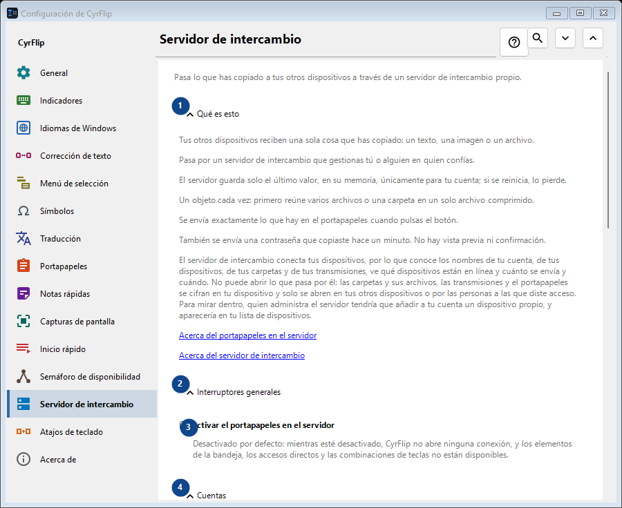
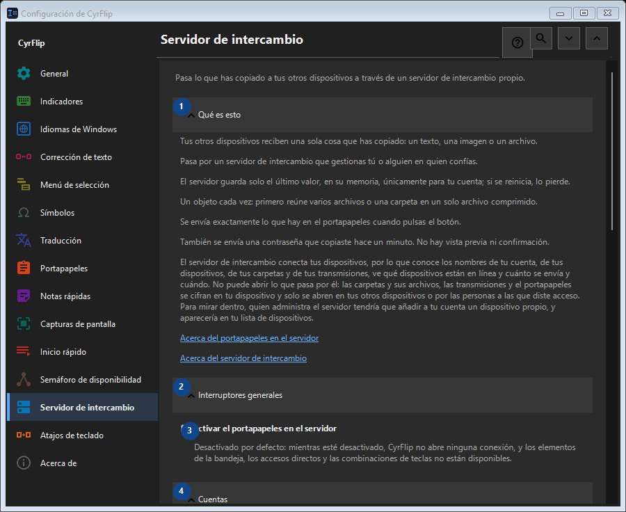

Servidor de intercambio
Para qué sirve
Pasa lo que has copiado a tus otros dispositivos a través de un servidor de intercambio propio.


Orden de uso
Los ajustes se aplican de inmediato. No hay un orden obligatorio; usa los grupos siguientes.
Elementos
1. Qué es esto
Usa este comando para la acción indicada. Lee cualquier confirmación antes de aceptarla.
Tus atajos2. Interruptores generales
Usa este comando para la acción indicada. Lee cualquier confirmación antes de aceptarla.
Tus atajos3. Activar el portapapeles en el servidor
Desactivado por defecto: mientras esté desactivado, CyrFlip no abre ninguna conexión, y los elementos de la bandeja, los accesos directos y las combinaciones de teclas no están disponibles.
Tus atajos4. Cuentas
Usa este comando para la acción indicada. Lee cualquier confirmación antes de aceptarla.
Tus atajos5. Añadir cuenta..
No disponible mientras «Activar el portapapeles en el servidor» esté desactivado: activa antes ese interruptor. Este elemento no está disponible. Activa primero la función o selecciona una entrada.
Tus atajos6. Atajos y accesos directos
Usa este comando para la acción indicada. Lee cualquier confirmación antes de aceptarla.
Tus atajos7. Enviar portapapeles al servidor
No disponible mientras «Activar el portapapeles en el servidor» esté desactivado: activa antes ese interruptor. Este elemento no está disponible. Activa primero la función o selecciona una entrada.
Tus atajos8. Cambiar - Enviar portapapeles al servidor
No disponible mientras «Activar el portapapeles en el servidor» esté desactivado: activa antes ese interruptor. Este elemento no está disponible. Activa primero la función o selecciona una entrada.
Tus atajos9. Obtener portapapeles del servidor
No disponible mientras «Activar el portapapeles en el servidor» esté desactivado: activa antes ese interruptor. Este elemento no está disponible. Activa primero la función o selecciona una entrada.
Tus atajos10. Cambiar - Obtener portapapeles del servidor
No disponible mientras «Activar el portapapeles en el servidor» esté desactivado: activa antes ese interruptor. Este elemento no está disponible. Activa primero la función o selecciona una entrada.
Tus atajos11. Poner «Enviar» en el escritorio
No disponible mientras «Activar el portapapeles en el servidor» esté desactivado: activa antes ese interruptor. Este elemento no está disponible. Activa primero la función o selecciona una entrada.
Tus atajos12. Poner «Obtener» en el escritorio
No disponible mientras «Activar el portapapeles en el servidor» esté desactivado: activa antes ese interruptor. Este elemento no está disponible. Activa primero la función o selecciona una entrada.
Tus atajos13. Archivos recibidos
Usa este comando para la acción indicada. Lee cualquier confirmación antes de aceptarla.
Tus atajos14. Carpeta para los archivos recibidos del servidor
No disponible mientras «Activar el portapapeles en el servidor» esté desactivado: activa antes ese interruptor. Este elemento no está disponible. Activa primero la función o selecciona una entrada.
Tus atajos15. Elegir - Carpeta para los archivos recibidos del servidor
No disponible mientras «Activar el portapapeles en el servidor» esté desactivado: activa antes ese interruptor. Este elemento no está disponible. Activa primero la función o selecciona una entrada.
Tus atajos16. Abrir carpeta - Carpeta para los archivos recibidos del servidor
No disponible mientras «Activar el portapapeles en el servidor» esté desactivado: activa antes ese interruptor. Este elemento no está disponible. Activa primero la función o selecciona una entrada.
Tus atajos